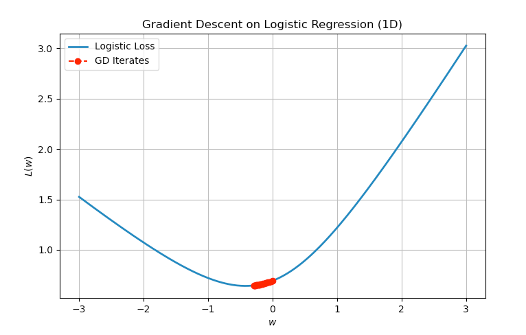

2.4. Extension and Application of Gradient Descent Based Algorithms#
In this section, we present several examples to extend the concepts introduced so far. The section is divided into two parts. The first part highlights practical extensions of the gradient descent algorithm, by introducing a wider class of algorithm called first-order algorithms. The second part provides a more detailed case study demonstrating how gradient descent can be applied in practice.
2.4.1. First-Order Algorithms Beyond Gradient Descent#
2.4.2. Example: Logistic Regression#
In this section, we present a detailed case study applying gradient descent to solve a logistic regression (LR) problem. This example illustrates how the optimization techniques introduced earlier can be applied to real-world machine learning tasks. We will focus on key issues that may arise during the optimization process, and demonstrate how the theory developed so far can help resolve these challenges and provide practical insights.
2.4.2.1. Problem Setup#
We are given a binary classification task with input-label pairs \((\vx_i, y_i)\) where \(\vx_i \in \RR^d\) and \(y_i \in \{-1, +1\}\). The logistic regression model aims to estimate the conditional probability that a data point belongs to the positive class:
Here, \(\vw \in \RR^d\) is the vector of parameters to be learned. This model uses the logistic (sigmoid) function:
This prediction function can be compactly expressed for any label using:
To estimate \(\vw\), we minimize the empirical logistic loss:
This function is convex, differentiable, and commonly used in binary classification tasks. The key point is that \(L(\vw)\) penalizes the model when \(y_i \vw^\top \vx_i\) is small (i.e., when the margin is small or negative).
2.4.2.2. Gradient Descent Algorithm#
We now apply gradient descent to minimize the loss function in Equation (2.5). The gradient is given by:
Thus, the update rule at iteration $\(r\)$ becomes:
where \(\alpha > 0\) is the step size (learning rate).
2.4.2.3. One-Dimensional Example#
To better visualize the optimization dynamics, consider a 1-dimension example where the optimization variable \(w\) is a scalar. Consider a problem with two data points:
data point 1: \(x_1 = 1, \quad y_1 = +1\)
data point 2: \(x_2 = 2, \quad y_2 = -1\)
Letting \(w \in \RR\) be the scalar weight (since \(d = 1\)), the loss becomes:
This is a univariate convex function. Its gradient is:
Gradient descent proceeds via:
We can simulate this numerically or plot the function and its iterates to illustrate the convergence behavior.
import numpy as np
import matplotlib.pyplot as plt
# Logistic loss and its gradient
def logistic_loss(w):
return 0.5 * np.log(1 + np.exp(-w)) + 0.5 * np.log(1 + np.exp(2 * w))
def logistic_grad(w):
term1 = -0.5 / (1 + np.exp(w))
term2 = 0.5 * 2 / (1 + np.exp(-2 * w))
return term1 + term2
# Gradient descent parameters
alpha = 0.1 # step size
w0 = 0.0 # initial point
num_iters = 20 # number of iterations
# Store iterates
w_vals = [w0]
loss_vals = [logistic_loss(w0)]
# Run gradient descent
w = w0
for _ in range(num_iters):
grad = logistic_grad(w)
w = w - alpha * grad
w_vals.append(w)
loss_vals.append(logistic_loss(w))
# Plotting
w_grid = np.linspace(-3, 3, 300)
loss_grid = [logistic_loss(wi) for wi in w_grid]
plt.figure(figsize=(8, 5))
plt.plot(w_grid, loss_grid, label="Logistic Loss", linewidth=2)
plt.plot(w_vals, loss_vals, 'ro--', label="GD Iterates")
plt.xlabel("$w$")
plt.ylabel("$L(w)$")
plt.title("Gradient Descent on Logistic Regression (1D)")
plt.legend()
plt.grid(True)
plt.show()

Fig. 2.2 Projection of two points \(z_1, z_2\) onto the convex unit ball.
Iteration for applying GD to the logistic regression problem with data point 1.#